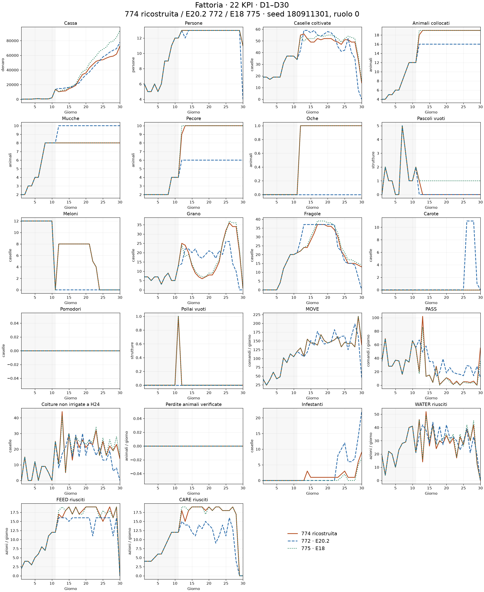
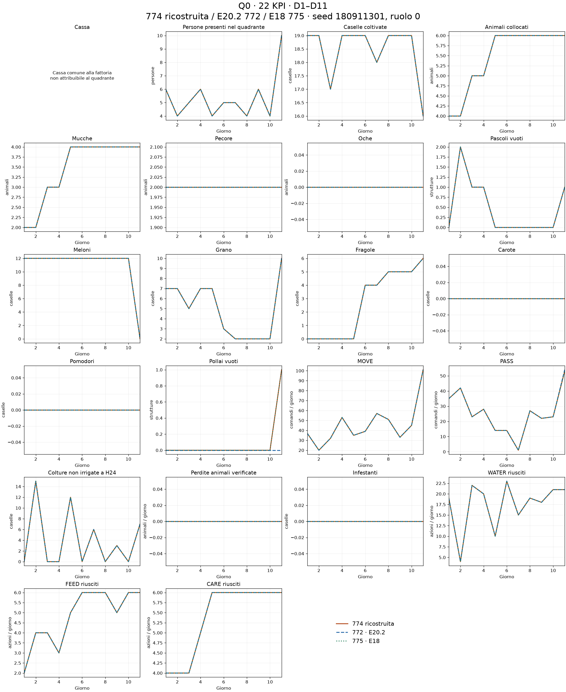
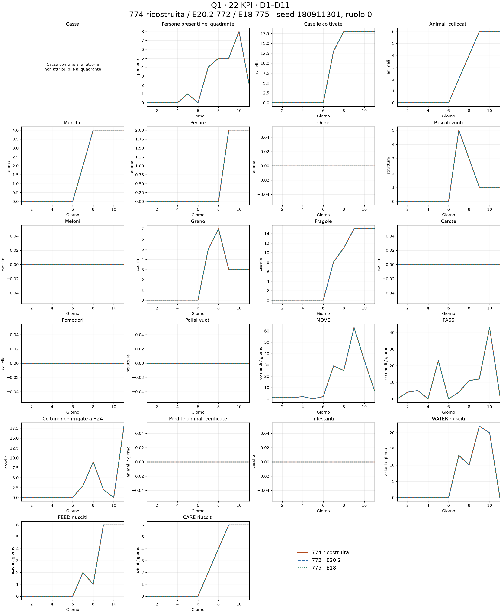
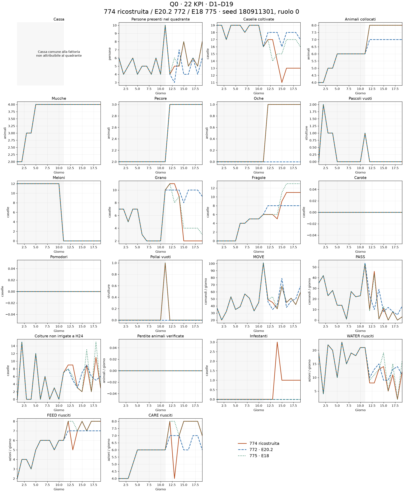
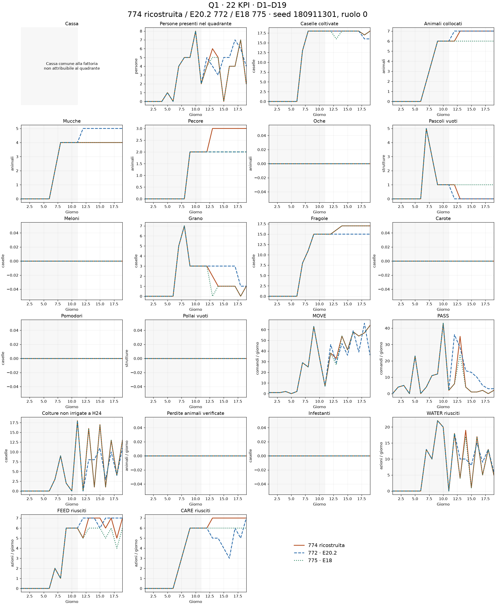

La 774 è una ricostruzione moderna persistente: non è il vecchio eseguibile perduto. Nel ramo superstite riattivato il reclaim non si attiva: resta in RECOVERY e chiude 775, con zero rollback. La prima run è conservata separatamente.
La casella (4,7) ospita una pecora in 14/14 replay E18 verificati. Le transizioni della casella, incluse costruzione e collocazione, sono riportate nei dati. L’oca è contata tra gli animali.
Un solo seed esposto 180911301; ruolo 0 per tutte le curve. 774 e 772 affrontano E18; E18 775 affronta E20.2. Il diverso avversario e i negozi endogeni limitano il confronto a una descrizione, non a un effetto causale o ranking.
Soprattutto lana. Contro 772, 775 vende 140 unità a 159,34 medi; 772 ne vende 90 a 156,57. La differenza è principalmente il volume: dieci pecore contro sei.
Contro la curva 774, invece, la produzione è quasi uguale (140 contro 139), ma i mercati sono diversi. Nella partita 774/775 i due allevamenti vendono insieme 285 unità di lana D20–D30, contro 230 nella partita 775/772, con la stessa domanda di lana. Il prezzo pubblico D24 è 24 contro 193. La stessa E18, nella partita della 774, ricava dalla lana solo 8.326 e chiude a 75.765: vantaggio diretto 3.292, non 21.559.
Analisi completa e riconciliazione della cassa · Dati D20–D30
D1–D11: Q0 coincide con la 775; Q1 coincide con entrambe. La piccola differenza rispetto alla 772 in Q0 riguarda il pollaio vuoto e i PASS a D11. L’apertura E18 è conservata per costruzione: questa coincidenza iniziale non è una scoperta di superiorità biologica. La prima azione diversa dalla E18 è D12 H2; rispetto alla E20.2 è D11 H15.
D12–D19: la 774 rimane complessivamente più vicina alla 775 in entrambi i quadranti. Distanze normalizzate Q0: 0,126 dalla 775 contro 0,430 dalla 772; Q1: 0,245 contro 0,389. Non tutti i KPI sono più vicini singolarmente; le distanze per indicatore sono nel JSON.
In tutti i 14 replay E18 verificati la casella (x=4,y=7) ospita una pecora. Nel caso usato per i grafici, lo stato mostra il pascolo a D12 H10 e la pecora a D12 H18; sono gli orari dello stato successivo all’azione. Nella ricostruzione la casella diventa grano.
Gli animali totali non rimangono uno in meno. A D12: 774 = 8 mucche + 9 pecore + 1 oca (18); 775 = 8 + 10 + 1 (19). A D13 la ricostruzione colloca una pecora nel pascolo prima vuoto (6,3), osservata a H6, e torna a 19 animali, con tutti i 18 pascoli occupati. E18 mantiene 19 animali e un pascolo vuoto. Gli acquisti totali restano 8 mucche, 11 pecore e un’oca in entrambe. Quindi questo esperimento modifica spazio e distribuzione, non realizza ancora la riduzione coerente di un animale prevista per una futura E21.
Prima run: sola riattivazione del ramo superstite e correzione tecnica del confronto con una casella di tipo dizionario. Il reclaim non si attiva; il controller resta in RECOVERY, chiude 775, zero rollback. Seconda run: attivazione fissa a D12, target (4,7), filtri persistenti senza rollback anche al terminale e routing ereditato dal meccanismo E20v39, ridotto a una casella. Apertura E18 e pollaio conservati; cap aggregato COW/SHEEP 18 prima di Q2 e 19 dopo, senza tagliare gli acquisti residui. Non è l’eseguibile storico 774 né la nuova E21 con missioni biologiche complete.
Protocollo prima run · Protocollo 774 persistente · Hash e verifiche
| Quadrante / fase | Distanza 772 | Distanza 775 | Più vicina |
|---|---|---|---|
| Q0 · D1–11 | 0.0062 | 0.0000 | 775 |
| Q0 · D12–19 | 0.4301 | 0.1259 | 775 |
| Q0 · D1–19 | 0.1019 | 0.0327 | 775 |
| Q1 · D1–11 | 0.0000 | 0.0000 | pari |
| Q1 · D12–19 | 0.3891 | 0.2452 | 775 |
| Q1 · D1–19 | 0.0654 | 0.0289 | 775 |
| Modello | Topologia finale | Cassa finale | Avversario |
|---|---|---|---|
| 774 ricostruita | [7, 7, 4] | 72,473 | E18 |
| 772 · E20.2 | [7, 7, 2] | 77,837 | E18 |
| 775 · E18 | [7, 7, 5] | 94,032 | E20.2 |
22 KPI standard. Nei quadranti la cassa non è attribuita; persone indica presenza al checkpoint, MOVE è attribuito al quadrante di partenza. WATER/FEED/CARE sono esecuzioni verificate riapplicando i batch registrati; le somme Q0–Q3 coincidono con tutti i KPI globali non monetari in 90 giornate-modello. Checkpoint 24×D−1: prima dell’ultimo batch per D1–29, terminale per D30. La distanza usa il divario assoluto medio normalizzato per escursione di ciascun KPI, omette le costanti e pesa ugualmente i KPI; è una misura descrittiva scelta dopo la run.
Dati, transizioni e distanze per KPI · CSV giornaliero





[
{
"reference": "772 · E20.2",
"first_action_step": 255,
"day": 11,
"hour": 15
},
{
"reference": "775 · E18",
"first_action_step": 266,
"day": 12,
"hour": 2
}
]Due nuove partite seriali: prima riattivazione con rollback conservato ma mai attivato; seconda esclusione persistente D12 del target usando il meccanismo ereditato E20v39 ridotto a una casella, apertura E18 conservata. Cap COW/SHEEP 18 prima di Q2 e 19 dopo: nessuna eliminazione automatica degli acquisti residui. Nessuna promozione.